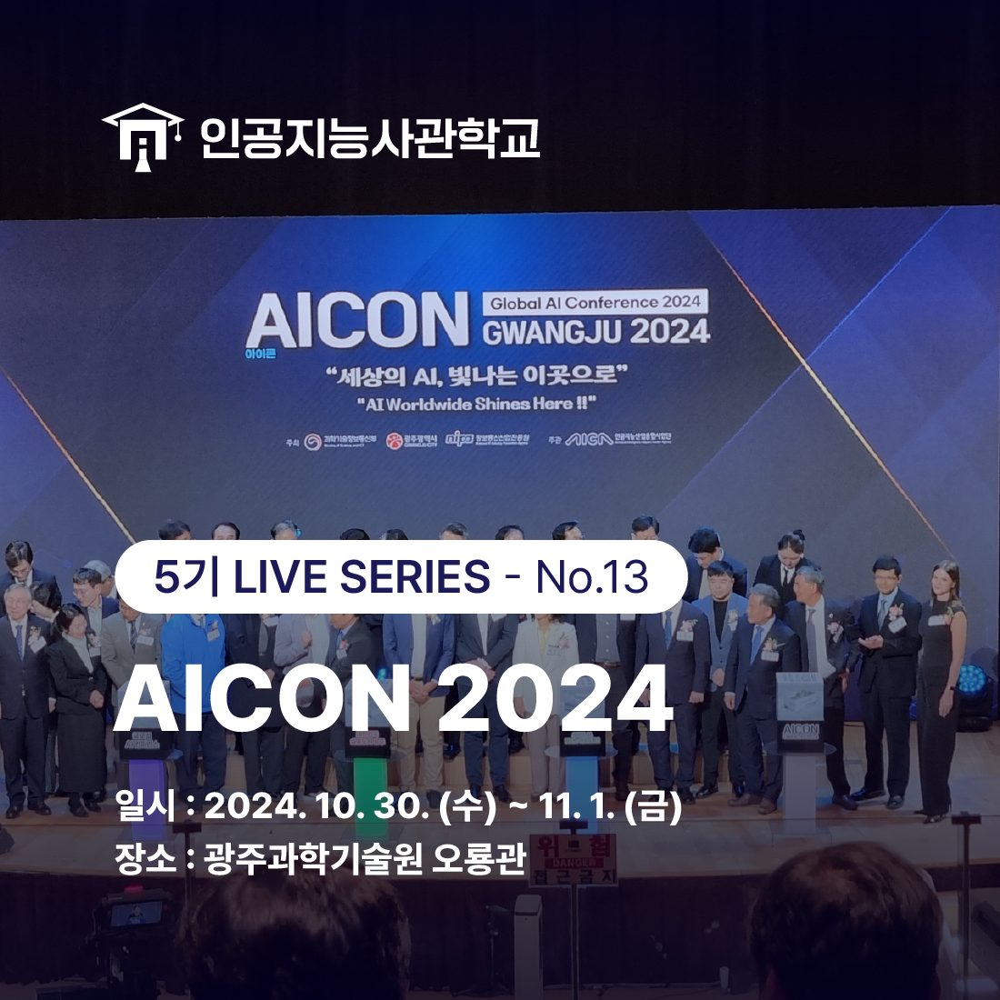
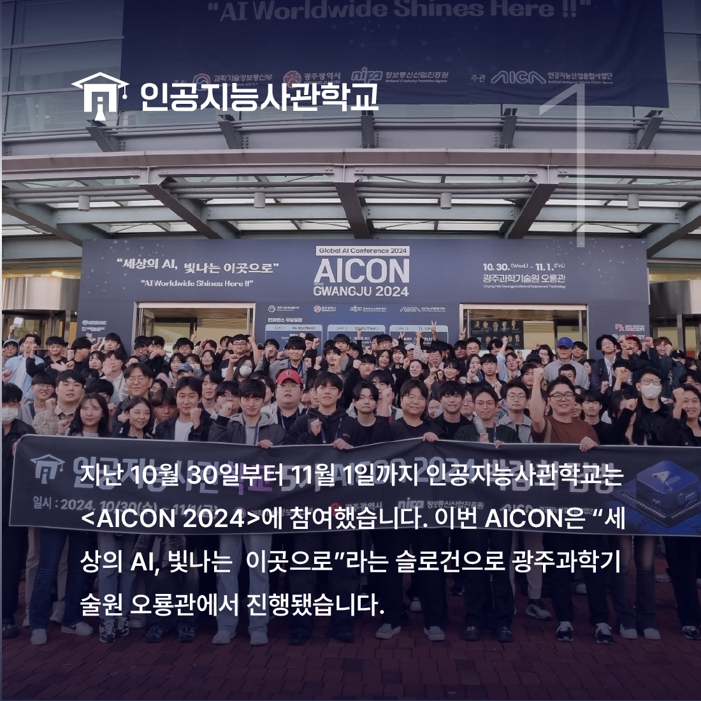
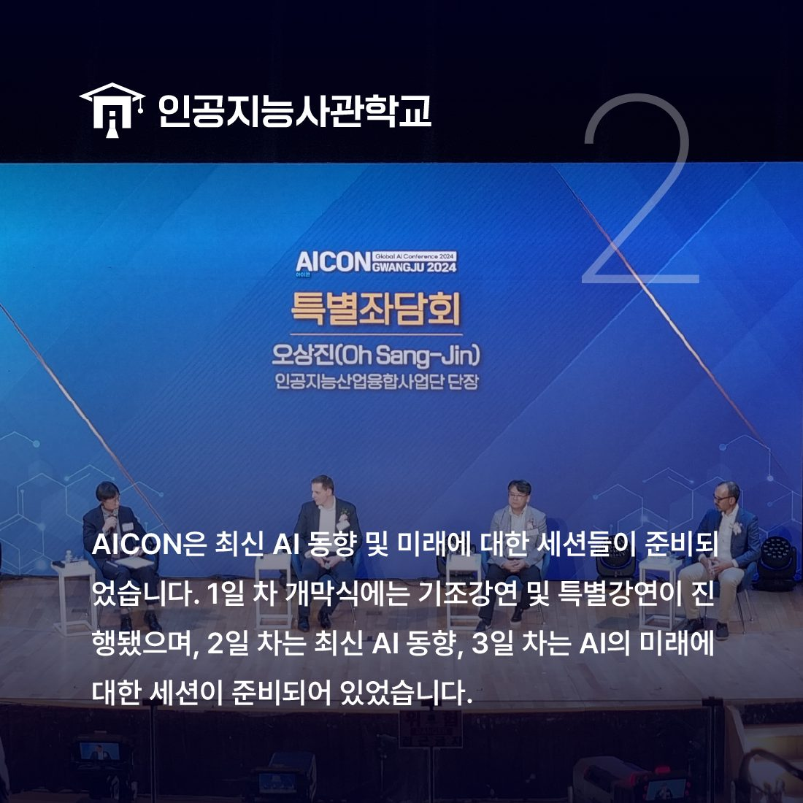
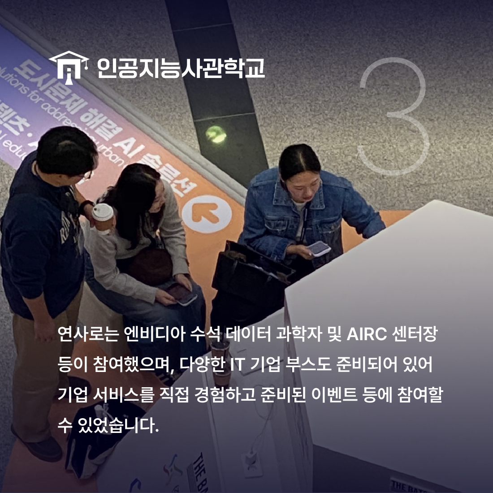
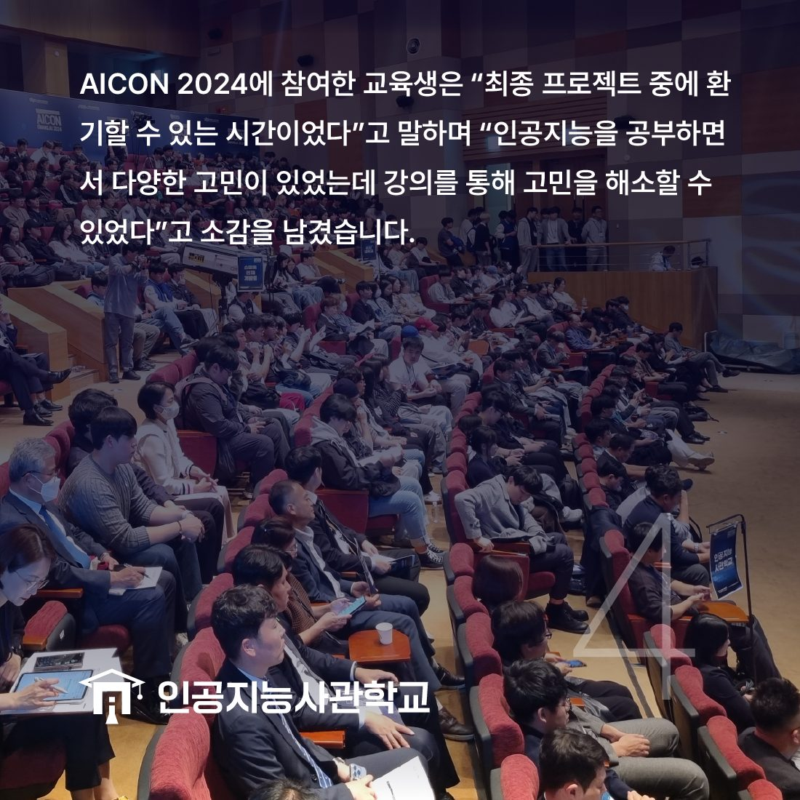

안녕하세요! 인공지능사관학교입니다. 😆

지난 10월 30일부터 11월 1일까지
광주과학기술원(GIST) 오룡관에서 진행된
<AICON 2024>에 인공지능사관학교가 참석했습니다.

인공지능사관학교의 10개 반은
AICON이 진행되는 삼 일 간 참석을 했는데요.

"세상의 AI, 빛나는 이곳으로"라는 슬로건에 걸맞게
온디바이스 AI, AI 반도체 등 최신 AI 트렌드와
AI 윤리와 같은 인공지능의 미래에 대한 세션이 준비되어 있었습니다.

연사로는 엔비디아 수석 데이터 과학자 및
AIRC 센터장 등이 참여했으며
다양한 IT 기업의 부스도 준비되어 있어
다양한 경험을 즐길 수 있었습니다.

AICON에 참여한 교육생은 "최종 프로젝트 중에
환기할 수 있는 시간이었다"고 말하며
"다양한 인사이트를 얻어간다"고 소감을 남겼습니다.